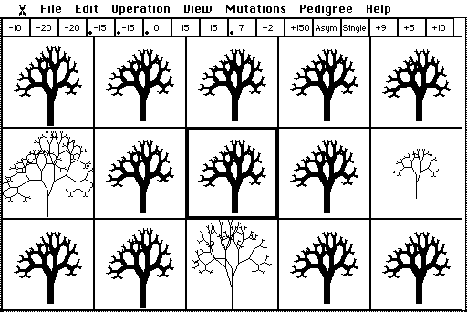
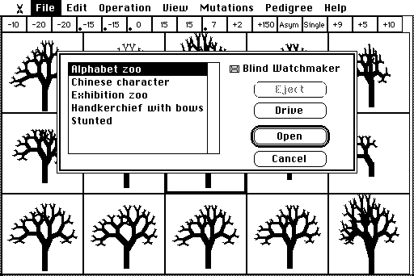
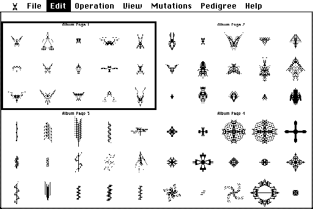
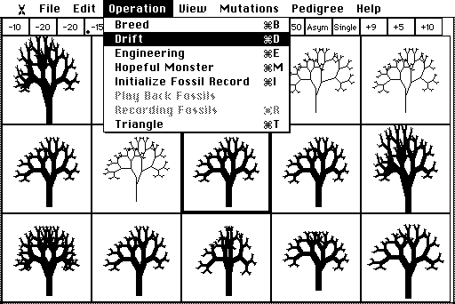
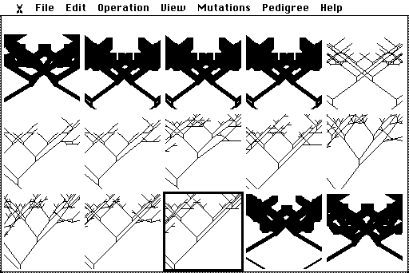
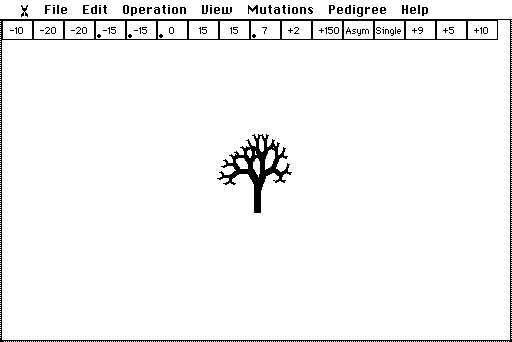
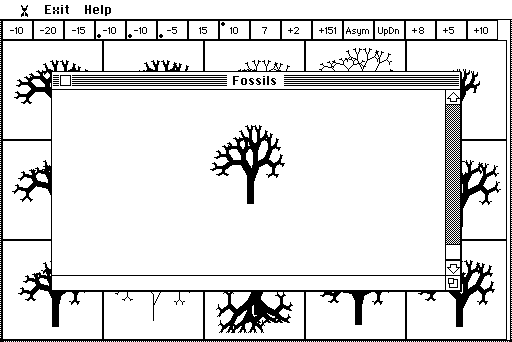
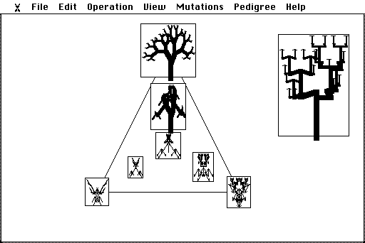
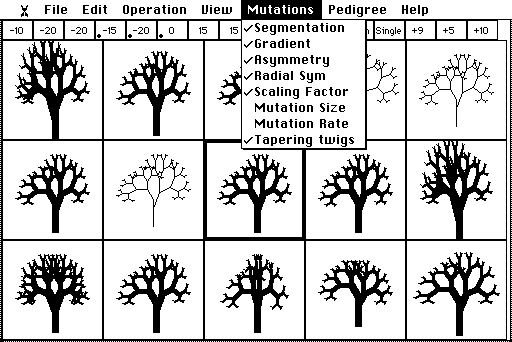
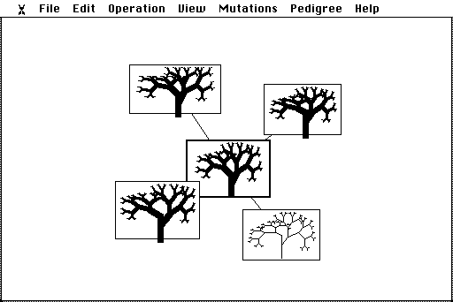

The Watchmaker's Manual
A companion to the Blind Watchmaker (Classic)
Keep this window open beside the program, and dip in whenever you are stuck.
1. Before you start
What you are looking at
In the mid-1980s, while writing The Blind Watchmaker (1986), the biologist Richard Dawkins wrote a program on his Apple Macintosh. He wanted to see whether the simplest possible model of evolution, random mutation plus selection, repeated over many generations, could build something that looks designed. The result was this program. The screen in front of you is a faithful recreation of it (version 1.1, 1993), right down to the black-and-white pixels.
The little drawings are biomorphs, a word Dawkins took from the zoologist and surrealist painter Desmond Morris, who used it for the animal-like shapes in his paintings. Each biomorph is grown from a short list of numbers, its genes. You never draw a biomorph. You choose which ones get to have offspring, and the offspring inherit their parent's genes with occasional small copying errors: mutations. That is all. Everything you will see, from trees to insects to things that look like chandeliers, comes from repeating those two steps.
Working a 1980s Macintosh
The original ran on a Mac with a 9-inch black-and-white screen, and the recreation behaves the same way. A few habits from 1986 are worth knowing.
- Menus. Press on a menu title (say ), slide down to an item and let go. Or click the title once to open it and click the item. Items in grey are not available at the moment.
- Keyboard shortcuts. Most menu items show a ⌘ letter. You can type just the letter: press B to Breed, E for Engineering, and so on. Avoid ⌘W and ⌘Q in the browser: they close the tab or quit the browser. Use the File menu to quit.
- The pointer tells you the mode. A cross means breeding; a die means Hopeful Monster; a syringe means Engineering; a hand, scissors or gun mean you are rearranging a pedigree. During animations the pointer disappears. Nudge the mouse and it comes back.
- There is no Undo. If you like a biomorph, save it before you move on (Edit ▸ Add Biomorph to Album, or just press A).

How a biomorph grows
A biomorph is not stored as a picture. It is grown, a little like an embryo, by following a simple rule over and over. Start with a trunk. At its tip, sprout two branches, one leaning left and one leaning right. At the tip of each of those, sprout two more, and so on. Gene 9 says how many times to repeat the forking, so each extra step doubles the number of twigs.
The other genes set the lengths and angles of the branches at each kind of fork. Because the same few numbers are reused at every fork, one small change to a gene alters the whole drawing at once. That is the important idea: genes are a recipe, not a blueprint. A blueprint would have one number per twig; a recipe describes a process, and the shape emerges from it. Real genes work the same way, through development.
The sixteen genes
The strip across the top of the screen has one box per gene. Point at any biomorph and the strip shows its genes. Dawkins' first version, the one described in the book, had only the first nine. He added the rest a few years later (see Investigation D).
| Box | What it controls |
|---|---|
| 1 – 3 | How far each kind of branch leans sideways. Bigger numbers mean wider spreads; negative numbers lean the other way. |
| 4 – 8 | How far each kind of branch reaches up or down. Gene 4 is the trunk; negative means upwards. |
| 9 | Depth: how many times the branches fork. Each step doubles the number of twigs. |
| 10 | Number of segments: copies of the whole body, stacked one below another. |
| 11 | Distance between segments. |
| 12 | Bilat (mirror-symmetric, left and right alike) or Asym (only one side is drawn). |
| 13 | Single, UpDn (also mirrored top to bottom) or Radial (four-way, like a starfish). |
| 14 | Scaling factor. Bigger numbers make a smaller biomorph. |
| 15 | Mutation size: how big a jump genes 1–8 make when they mutate. |
| 16 | Mutation rate: roughly the percentage chance that each gene mutates in each offspring. |
A small black dot in a gene box marks a gradient: in a segmented biomorph, that gene grows (dot at the top) or shrinks (dot at the bottom) from one segment to the next, so the segments are not all alike. On gene 9 a dot means tapering: thick trunk, thin twigs. That is why the starting tree has a sturdy trunk.
2. Your first ten minutes
Open the program (or reload it). It starts by breeding a litter from Dawkins' starting tree. Then try this.
- Choose a goal. Pick something definite: the tallest, skinniest tree you can make; something with wings; something that looks like a spider. Write it down. A goal turns you into a consistent selector.
- Look at the litter. Most of the fourteen offspring look almost exactly like their parent. Some are identical: no mutation happened to land on a gene that shows. A few differ in one small way.
- Click the offspring closest to your goal. It glides to the centre and becomes the next parent. A line flashes out to each box (an umbilical cord, Dawkins called it) and a new litter is drawn.
- Repeat for twenty or thirty generations. Don't wait for a perfect child: take any step in the right direction.
- When you like the result, press A to add it to the Album, then carry on breeding. Press H at any time for the program's own help on what you are doing.
What just happened
You never made a big leap. Every step was a tiny variation on the one before, but the steps added up, because each generation started from the best of the last. That is cumulative selection, the engine of the whole book. Compare it with waiting for one lucky leap in Investigation A.
If you get stuck
- Nothing seems to change.
- Click the parent itself (the centre box) for a fresh litter. If change is still too slow, choose and raise gene 15, the mutation size, by clicking the right-hand third of its box; then choose again.
- My biomorph is cut off at the edges.
- Biomorphs are never shrunk to fit; they are clipped by their box, as in 1986. Choose smaller offspring for a while, or use View ▸ Fewer Columns for wider boxes. Rows and columns always stay odd, so that there is a middle box for the parent.
- It has become enormous and slow to draw.
- Pick offspring with fewer twigs, or lower gene 9 in Engineering.
- I changed the grid and now there is only one biomorph.
- That is normal. Choose (B) to start a new litter in the new grid.
- I lost a good one.
- There is no Undo. Save as you go: A adds the current biomorph to the Album, and File ▸ Save Biomorph keeps it on the disk. Better still, turn on the Fossil record before you start (next tip).
- A menu item is grey.
- It does not apply in the current mode. For example, Play Back Fossils only works from the breeding screen.
Tip: keep a diary
Choose Operation ▸ Initialize Fossil Record (I) before you start breeding. Every parent you choose is then recorded, and Operation ▸ Play Back Fossils lets you scroll back through your lineage later.
3. Feature reference
One section per menu, in menu-bar order. The first menu, under the little biomorph at the far left, holds . Click anywhere to close the About box.
File

- L opens a file of biomorphs and adds them to the Album. The disk called "Blind Watchmaker" holds five of Dawkins' original files, including his Alphabet zoo and Exhibition zoo. Click Drive to open a file from your own computer instead.
- O opens a file as a fossil record and plays it back.
- , F and S save to the disk. Files saved to the disk stay in this browser on this computer. To keep a copy elsewhere, or hand one in, click Drive in the Save dialog to download it.
- empties the Album (it offers to save first).
- leaves the program.
Edit
- C puts a picture of the current biomorph on the clipboard, ready to paste into a report.
- V and work on Album slots: Clear empties a slot, and Paste fills an empty slot with the last biomorph you copied.
- lets you pick any biomorph on the breeding screen without breeding from it: click one and its box turns black. It becomes the "active" biomorph that Engineering, Drift, Save and so on will use.
- A files the current biomorph on the next free Album page. The page flashes up, then you are returned to where you were.
- shows the Album. With more than one page you first see miniatures of all the pages: click one to open it, then click a biomorph to select it.

Operation

B
The heart of the program. The current biomorph becomes a parent in the centre box and its offspring fill the rest. Click an offspring to make it the next parent; click the parent for a new litter. Point at any box to read its genes in the strip.
D
Mutation without selection. The biomorph changes by one random mutation after another, and nobody chooses. Drift only runs while the pointer is inside the window: move up to the menu bar to pause, and choose another operation to stop. View ▸ Drift Sweep shows the lineage spread across the boxes instead of one picture at a time.

E
Change genes directly, like a genetic engineer, instead of breeding. Move the pointer up into the gene strip ("the chromosome"). Over the left third of a box it becomes a left arrowhead: click to lower that gene. The right third raises it. Hold the button to repeat. In boxes 1–9 and 11, the middle third sets a gradient: upper part = increasing, middle = none, lower = decreasing. Elsewhere the pointer is a hypodermic syringe that does nothing (try it twice and the program will tell you so).

M
A biomorph with entirely random genes, as if made by one enormous mutation. Click anywhere for another. (The name comes from the geneticist Richard Goldschmidt, who thought new species might appear in single large jumps.)
Fossils: I, , R
Recording starts switched off. Initialize Fossil Record empties the record and starts recording: from then on, every parent you choose while breeding is saved, oldest first. Recording Fossils switches recording off and on. Play Back Fossils (from the breeding screen) opens a window with a scroll bar. The newest fossil is at the top; drag the scroll box down, or click the arrows, to sink back through the strata. Drag the window by its title bar and resize it from the bottom-right corner. In the Exit menu, starts breeding again from the ancestor on show, and returns you to the breeding screen.

T
Explore "Biomorph Land", the space of all possible biomorphs. Three anchor biomorphs sit at the corners of a triangle. Every point inside is a blend of their genes, weighted by how close it is to each corner. As you move the mouse, the pointer itself becomes a tiny picture of the biomorph you would get there. Click to draw it full size. Points outside the triangle extrapolate beyond the anchors.

View
- and change the breeding grid (always odd numbers; up to 99 boxes). Choose Breed afterwards to fill it.
- and (Engineering only) change the line width, for bolder pictures.
- switches Drift between one picture at a time and a sweep across the boxes.
- replaces a Triangle anchor with the current biomorph.
Mutations
Each item switches one kind of mutation on (ticked) or off. A switched-off kind is frozen: those genes are inherited unchanged. Genes 1 to 9 can always mutate.

| Segmentation | Gene 10 (number of segments) and gene 11 (distance between them). Switching it off also switches off Gradient. |
| Gradient | The segment-to-segment gradients (the dots). |
| Asymmetry | Gene 12, one-sided versus mirror-symmetric. |
| Radial Sym | Gene 13, up-down and four-way symmetry. |
| Scaling Factor | Gene 14. |
| Mutation Size | Gene 15 (off at the start). |
| Mutation Rate | Gene 16 (off at the start). |
| Tapering twigs | The gradient on gene 9: thick trunks and thin twigs. |
Pedigree
A family tree you grow by hand. 1 puts the current biomorph in the middle of the screen in a box with a double border. A double border marks an Adam: a biomorph with no parent. Then:
- 2: press inside a box and drag outwards. A line follows the pointer; let go and a mutant child is born where it ends, joined to its parent by a line. With 4 or 5 you draw out two or four children at once ( 3 returns to one).
- 6: drag boxes around. They stack like little windows, and the lines follow.
- 7: snip a biomorph (and its descendants) away from its parent. It becomes a new Adam.
- 8: remove a biomorph and all its descendants. There is no Undo.

Help
H shows the program's own short help for the mode you are in. covers the grid and the Mutations menu.
Keyboard summary
| B D E M T | Breed, Drift, Engineering, Hopeful Monster, Triangle |
| I R | Initialize Fossil Record, Recording Fossils |
| A C V | Add to Album, Copy, Paste |
| L O S F | Load to Album, Load as Fossils, Save Album, Save Fossils |
| 1 – 8 | Pedigree: Display, Draw Out, No/Single/Double Mirrors, Move, Detach, Kill |
| H | Help with current operation |
| Return / Esc | The default button / Cancel in dialogs |
4. Investigations
Each investigation stands on its own and takes 10 to 25 minutes. They are ways of asking the program questions about evolution. Work in pairs if you can: one at the mouse, one keeping notes, then swap. Each one ends with questions to think about. There are no trick questions, but the best answers connect what you saw on the screen to what happens in real populations.
A. One step or many?
The question. Could random variation alone, without accumulation, produce something that looks designed? Dawkins called this single-step selection, as opposed to cumulative selection.
- Agree on a target with your partner, for example "something that looks like an insect: a body, legs and maybe antennae".
- Single-step. Choose Operation ▸ Hopeful Monster (M). Click 50 times, counting how many monsters you would honestly call insects. Note the best one.
- Cumulative. Reload the program (or Breed from the starting tree). Breed towards your insect, counting generations, until you have something you would call an insect, or 50 generations have passed.
- Press A to add your best insect to the Album, and compare it with the best monster.
What to notice
- How often did a hopeful monster look like anything in particular?
- How many generations did breeding take? Did progress come smoothly or in spurts?
Think about
- Both methods used exactly the same kind of random variation. What made the difference?
- In the same chapter of his book, Dawkins imagines a monkey typing the phrase METHINKS IT IS LIKE A WEASEL. The chance of typing all 28 characters correctly in one go is 1 in 2728, about 1 in 1040. Keeping the closest attempt each round and copying it with errors gets there in a few dozen rounds. How is that like what you just did with insects?
- Why is "evolution is just chance" a misunderstanding?
B. Selection or drift?
The question. What happens to a lineage when mutations keep coming but nothing selects among them?
- Starting from the tree, choose Operation ▸ Drift (D) and keep the pointer in the window. Watch for two minutes. Pause by moving to the menu bar.
- Choose View ▸ Drift Sweep and Drift again. Now the lineage is written out box by box. Watch a full sweep or two.
- Choose Breed and spend two minutes selecting for one feature, such as height. Compare where the two lineages went.
What to notice
- Does drifting have a direction? Does it get more complex, less complex, or neither?
- How long does a drifting form keep any resemblance to where it started?
Think about
- What is the difference between change and adaptation?
- In population genetics, "genetic drift" means random changes in gene frequencies because a population is finite. The program's Drift is a little different: it follows a single lineage taking random mutational steps. What would you need to add to make it a model of genetic drift in a population?
C. From genes to bodies
The question. How do individual genes affect the body, and does the same change always have the same effect?
- Starting from the tree, choose Operation ▸ Engineering (E).
- Change one gene at a time, a few clicks up and then back down, and describe the effect in a table (gene, change, what happened). Try genes 1, 4, 7, 9, 10 and 13.
- Now set gene 9 to 1 (left third of box 9, several clicks). Try changing genes 1, 2 and 3 again.
- Set gene 9 back to 6 and add segments with gene 10 (right third). Then click the top of the middle third of box 4 to give it a gradient.
What to notice
- Does any gene affect just one part of the body?
- What happened to genes 1–3 when gene 9 was 1?
Think about
- Biologists call a gene that affects many traits pleiotropic. Are biomorph genes pleiotropic? Why might that matter for evolution?
- When the effect of one gene depends on another, that is epistasis. Where did you see it?
- Engineering is quick, so why does nature not "engineer"? What does breeding do that engineering cannot?
D. Evolving evolvability
The question. The book's original biomorphs had only nine genes. In 1987 Dawkins added segmentation, gradients and new symmetries. Do new developmental tricks open up new kinds of body?
- Make a 1986 biomorph. In Engineering, click the left third of box 10 until it reads +1 (one segment), then click the middle of boxes 4, 5, 6 and 9 to remove their dots. Set box 12 to Bilat (right third).
- In the Mutations menu, untick Segmentation, Asymmetry, Radial Sym, Scaling Factor and Tapering twigs. Now only genes 1–9 can mutate: the book's world.
- Breed for ten minutes towards anything you like. Add three favourites to the Album.
- Tick everything back on and breed for another ten minutes. Add three more favourites.
What to notice
- Which kinds of shape appeared only after the new mutations were switched on?
- Compare your Album favourites from the two sessions with a partner's.
Think about
- Segmentation is a single change to how bodies are built, not to any particular body. Why might such a change be so powerful?
- Real examples include the segmented bodies of arthropods and the repeated vertebrae of vertebrates. Which other developmental "inventions" might have opened up new possibilities in the history of life?
- Can a lineage be selected for being good at evolving? (Dawkins explored this in his 1989 paper; see further reading.)
E. Reading the fossil record
The question. What does a complete record of a lineage look like, and how does it compare with real fossils?
- Choose Operation ▸ Initialize Fossil Record (I).
- Breed for at least 30 generations towards a goal. Change your mind about the goal once, half way through.
- Choose Operation ▸ Play Back Fossils. Scroll from the oldest (bottom) to the newest (top) with the arrows. Then jump around by dragging the scroll box.
- File ▸ Save Fossils keeps the record. Use Drive to download it if you need to hand it in.
What to notice
- Can you see where you changed your goal?
- Pick two fossils ten generations apart. Would you guess they were related if you saw only those two?
Think about
- Your record is complete; real fossil records are not. Pretend you only had every tenth fossil. What would the lineage seem to have done?
- Where would a palaeontologist be tempted to talk about "sudden" change or "missing links"?
F. Descent from a common ancestor
The question. How do related lineages diverge, and what do family trees of species look like?
- Choose Pedigree ▸ Display pedigree (1). Your current biomorph becomes an Adam.
- Choose Pedigree ▸ Double Mirrors (5) and draw out four children at once from the Adam.
- Switch back to No Mirrors (3). From two of the children, draw out a chain of five or six generations each, heading off in different directions.
- Use Move (6) to tidy the layout. Then Kill (8) one child of the Adam and watch what disappears.
What to notice
- How alike are siblings? How alike are the tips of your two long chains?
- What did one Kill remove?
Think about
- Why do two lineages from the same ancestor keep diverging, even without any selection pushing them apart?
- Your pedigree is a nested hierarchy. Why do biologists expect real species to fall into groups within groups, and what would it mean if they did not?
- What does a Kill near the root of the tree represent in the history of life?
G. A walk through Biomorph Land
The question. Every possible biomorph has a place in a vast space of genetic possibilities. What is that space like?
- Choose Operation ▸ Triangle (T). Move the pointer slowly from corner to corner and watch it change.
- Click half a dozen points along one edge, then a few in the middle.
- Click a few points well outside the triangle.
- Breed something of your own, choose View ▸ Make right of triangle, then choose Triangle again and explore.
What to notice
- Are the in-between forms always "halfway" in appearance?
- What lies outside the triangle?
Think about
- The triangle is a flat slice through a space with as many dimensions as there are genes. With nine genes, each able to step up or down, every biomorph in the book's version has eighteen nearest neighbours. Why does that make it possible to travel a long way through the space in small steps?
- Hopeful Monster drops you at a random point in the space. Breeding walks you step by step. Why does one find interesting places and the other rarely does?
H. The alphabet challenge
The question. How easy is it to evolve a particular, chosen shape?
- File ▸ Load to Album (L) and open Alphabet zoo: Dawkins' own biomorph alphabet.
- Pick a target letter, perhaps one of your initials. Click it on its Album page and press E (Engineering) to read its genes. Note them.
- Reload the program to get back to Dawkins' starting tree, and breed towards your letter. Count generations, and add your closest attempt to the Album. (Reloading empties the Album; load the Alphabet zoo again whenever you need it.)
- Try a letter that is not mirror-symmetric, such as J or L, and compare.
What to notice
- Which letters are easy to approach, and which seem out of reach?
- Did you get stuck at a dead end and have to retreat to go forward?
Think about
- Why are symmetric letters (A, H, T, V, X) easier than asymmetric ones? What does that say about how the way bodies are built limits what can evolve?
- Breeding towards a fixed target is unlike natural selection in one important way. Which?
I. Who is the watchmaker?
The question. The title of the book comes from William Paley's argument that a watch implies a watchmaker. Dawkins' reply is that natural selection is a blind watchmaker: it has no foresight and no plan. But in this program, who is choosing?
- Breed for five minutes with no goal at all, choosing whatever catches your eye.
- Then breed for five minutes with a strict rule, such as "always the one with the most twigs", and follow it mechanically.
Think about
- In the program, you are the selective agent. Is breeding biomorphs closer to natural selection or to the artificial selection of pigeons and dogs that Darwin used as his starting point?
- Your strict rule could have been carried out by a machine. What would a natural equivalent of the rule be: who or what "chooses" in nature?
- What does the program leave out compared with real natural selection? Think about populations, environments, competition and death.
5. Questions, glossary and further reading
Big questions to discuss
- The biomorphs look designed, but nobody designed them. What, exactly, did the designing?
- Why does evolution by cumulative selection need small steps? Could it work with large ones?
- Most mutations made little visible difference, and a few made a big one. Is that realistic?
- The program shows that cumulative selection is powerful. What does it not show about evolution in nature?
- If you ran your breeding session again from the same tree with the same goal, would you end up with the same biomorph? What does that suggest about replaying the history of life?
Glossary
- Adam
- In a pedigree, a biomorph with no parent (shown with a double border).
- Artificial selection
- Breeding in which a person chooses which individuals reproduce, as with crops, pigeons and dogs.
- Biomorph
- One of the program's computer creatures, grown from a short list of genes.
- Biomorph Land
- Dawkins' name for the space of all possible biomorphs, in which every biomorph sits next to those it differs from by one mutation.
- Cumulative selection
- Selection repeated over many generations, each one starting from the results of the last, so that small improvements add up.
- Development (embryology)
- The process by which genes build a body. In the program, the recursive branching rule.
- Drift (in this program)
- A lineage changing by random mutation with no selection. Not quite the same as genetic drift in a population.
- Epistasis
- When the effect of one gene depends on the state of others.
- Evolvability
- The capacity of a lineage to produce useful variation. Developmental innovations such as segmentation can increase it.
- Genotype and phenotype
- The genes (the numbers in the strip) and the body they build (the drawing).
- Gradient
- A gene whose value changes from one segment to the next.
- Hopeful monster
- A form produced by a single large mutation. The phrase is Richard Goldschmidt's.
- Mutation
- A random change in a gene when it is copied into an offspring.
- Pleiotropy
- When one gene affects several traits.
- Segmentation
- A body built from repeated units. Gene 10 in the program.
- Single-step selection
- Hoping that random variation produces a finished result in one go.
Further reading
- Dawkins, R. (1986). The Blind Watchmaker. Longman / Norton. Chapter 3, "Accumulating small change", introduces the biomorphs and the weasel.
- Dawkins, R. (1989). The evolution of evolvability. In C. G. Langton (ed.), Artificial Life. Addison-Wesley. Where segmentation and the other new genes were introduced.
- Dawkins, R. (1996). Climbing Mount Improbable. Viking / Norton. More computer creatures, and the idea of climbing the gentle slopes of an evolutionary landscape.
- Darwin, C. (1859). On the Origin of Species. Chapter 1, "Variation under domestication", the artificial-selection argument behind the whole program.